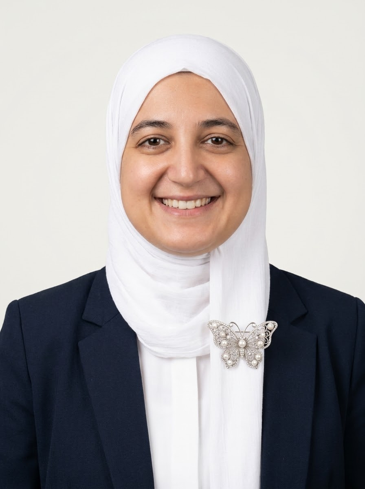

أستاذة ومدربة في الإعلامية والحساب الذهني
خريجة في الإعلامية التطبيقية ومدربة شغوفة بالتعليم الحديث. تمتلك خبرة قوية في التربية النشطة، وتنشيط الورشات التفاعلية، والحساب الذهني؛ حيث تجمع بين المهارات التكنولوجية والمواكبة الشخصية لجذب انتباه الطلاب وضمان نجاحهم الأكاديمي.
المدرسة العليا للتجارة الإلكترونية بمنوبة